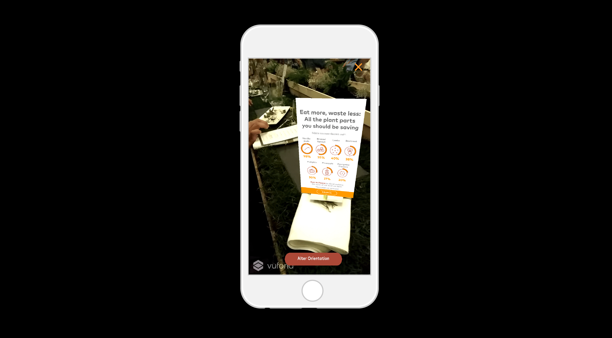
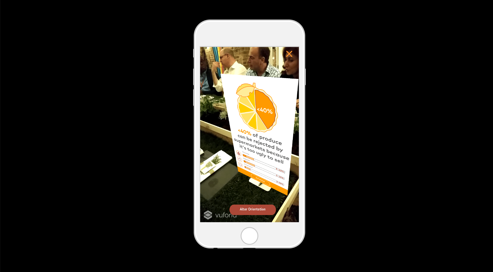

Root to Flower
A data-driven augmented reality experience that visually explains the effects of food waste on our environment. The custom app also included a set of AR recipe cards showing how to cook each dish at the event.
The Project
In collaboration with Spearhead Interactive and Joe Sarah Photography, I led the team at infogr8 to create a series of custom infographics to view in augmented reality. After downloading the app, guests were invited to discover these infographics by exploring their surroundings and finding specific
trigger images to point their phone camera at. Guests could also point their cameras at the large-scale food photography hanging on the walls to view the recipes that would be served that evening.

AR infographic showing parts of plants that can be eaten, but are often thrown away.
Contribution
Before starting the design process, I researched and analyzed data on global food waste to find the most impactful facts to feature at the event. These stats were then contextualised alongside other data to help people put the numbers in perspective.
For example: did you know that the amount of global food waste is 4x the amount needed to feed all the malnourished people in the world? I then worked with a team of designers to take these facts and produce a series of visualisations that weaved together
a narrative around food waste.

Each card was triggered by pointing a phone at a food photograph.